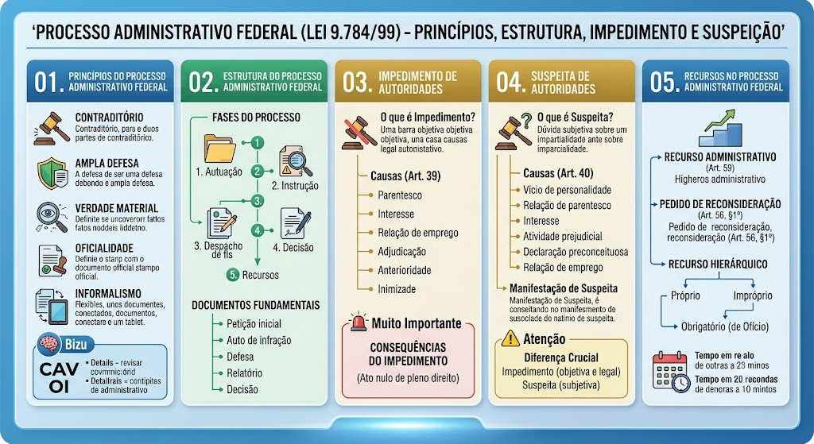

CORREÇÃO E ATUALIZAÇÃO
Processo administrativo federal: prazos e impedimento
A Lei 9.784/1999 aplica-se à Administração Pública Federal. O impedimento inclui interesse direto ou indireto, participação como perito/testemunha/representante (também por cônjuge, companheiro ou parente/afim até o terceiro grau) e litígio com interessado ou cônjuge/companheiro (art. 18). Suspeição envolve amizade íntima ou inimizade notória; o indeferimento pode ser recorrido sem efeito suspensivo (arts. 20 e 21). Salvo regra específica, o recurso é interposto em dez dias; a decisão ocorre em até trinta dias, prorrogáveis uma vez por igual período mediante justificativa. Recurso não tem efeito suspensivo como regra; pode recebê-lo nas hipóteses do art. 61. O prazo de cinco dias do art. 56, § 1º, é para a autoridade reconsiderar a decisão antes de encaminhar o recurso à superior — não é prazo geral de interposição de pedido autônomo.
Fonte oficial: consultar legislação e entendimento aplicável
Contraditório
Contraditório
Todo interessado deve ter o direito de se manifestar e apresentar defesa antes que a Administração progrida à decisão. Nenhum ato pode ser proferido sem ouvir a parte contrária, garantindo o direito de defesa. É princípio constitucional (Art. 5º, LV, CF) e regulado pela Lei 9.784/99.
Ampla Defesa
Ampla Defesa
O interessado deve ter a oportunidade de apresentar sua defesa completa, incluindo a produção de provas, a apresentação de documentos e a sustentação oral. A ampla defesa é parte integrante do devido processo legal e garante a isonomia entre as partes.
Verdade Material
Verdade Material
O processo administrativo deve buscar a verdade material, ou seja, o reconhecimento dos fatos reais, independentemente de formalidades. A Administração deve investigar todos os aspectos relevantes do caso, mesmo que não sejam levantados pelo interessado. Dá ao processo um caráter informativo e investigativo.
Oficialidade
Oficialidade
O processo administrativo deve ser conduzido por meio de atos oficiais, com a devida formalização em documento. Todos os atos processuais devem ser registrados em processo físico ou eletrônico, com assinatura ou reconhecimento eletrônico. Garante a publicidade e a transparência do processo.
Informalismo
Informalismo
Apesar do princípio da oficialidade, o processo administrativo admite certa flexibilidade na condução dos procedimentos, evitando excessos formais que possam dificultar a tramitação. O informalismo permite a utilização de meios eletrônicos, audiências virtuais e outras formas modernas de gestão processual.
🧠 Mnemônico dos Princípios
🧠 Mnemônico dos Princípios
Contraditório · Ampla Defesa · Verdade Material · Oficialidade · Informalismo → CAV OI
Bizu: Contraditório e ampla defesa são constitucionais (Art. 5º, LV e LVI, CF). Verdade material, oficialidade e informalismo são infraconstitucionais (Lei 9.784/99).
Fases do Processo
Documentos Fundamentais
O que é Impedimento?
O que é Impedimento?
É a suspensão do exercício de função por uma autoridade, por motivo legal, que impede a atuação naquele caso específico. O impedimento é relativo ao caso e temporário.
Causas de Impedimento (Art. 39 da Lei 9.784/99)
Consequências do Impedimento
Consequências do Impedimento
O ato praticado por autoridade impedida é nulo de pleno direito. A autoridade impedida deve abster-se de julgar e não pode proferir ato algum no processo. O caso deve ser remetido a outra autoridade competente.
O que é Suspeita?
O que é Suspeita?
É a suspensão do exercício de função por uma autoridade, por motivo que gere dúvida sobre a imparcialidade do magistrado ou agente. A suspeita é subjetiva e depende da percepção do interessado.
Causas de Suspeita (Art. 40 da Lei 9.784/99)
Manifestação de Suspeita
Manifestação de Suspeita
O interessado pode manifestar a suspeita mediante requerimento fundamentado, apresentando os motivos que justificam a suspeita. A autoridade suspeita deve abster-se de julgar e não pode proferir ato algum no processo. O órgão competente decide sobre a suspeita.
⚠️ Diferença Crucial
⚠️ Diferença Crucial
Impedimento = causa objetiva e legal (parentesco, interesse). Suspeita = causa subjetiva (dúvida sobre imparcialidade).
Impedimento é mais grave e absolve o caso. Suspeita depende da percepção do interessado.
Recurso Administrativo (Art. 59)
Recurso Administrativo (Art. 59)
Pedido de Reconsideração (Art. 56, §1º)
Pedido de Reconsideração (Art. 56, §1º)
Dirigido à própria autoridade que proferiu a decisão. Prazo: 5 dias para reconsideração; se não reconsiderar, deve encaminhar ao superior como recurso.
Recurso Hierárquico
Mapa-mental
Material de estudo: Processo Administrativo Federal (Lei 9.784/99)
Material complementar · Ver fonte no GitHub
Estrutura do Processo Administrativo Federal
Fases do Processo
- 1. Autuação: Abertura do processo administrativo com os autos iniciais.
- 2. Instrução: Coleta de provas, documentos e informações relevantes.
- 3. Despacho de fls: Análise do conteúdo do processo pelo responsável.
- 4. Decisão: Proferimento do ato final (homologação, indeferimento, etc.).
- 5. Recursos: Possibilidade de impugnar a decisão administrativa.
Documentos Fundamentais
- Petição inicial: Requerimento do interessado.
- Auto de infração: Notificação da infração.
- Defesa: Manifestação do interessado.
- Relatório: Análise do gestor.
- Decisão: Ato final da autoridade.
Impedimento de Autoridades
Causas de Impedimento (Art. 39 da Lei 9.784/99)
- Interesse: A autoridade tem interesse direto ou indireto no resultado do processo.
- Relação de emprego: A autoridade é empregadora ou empregado do interessado.
- Adjudicação: A autoridade participou ativamente do fato que deu origem ao processo.
- Anterioridade: A autoridade já decidiu sobre o mesmo caso ou fato jurídico.
- Inimizade: A autoridade tem relação de inimizade com o interessado.
Suspeita de Autoridades
Causas de Suspeita (Art. 40 da Lei 9.784/99)
- Vício de personalidade: A autoridade tem características que comprometem a imparcialidade (ex: preconceito, parcialidade).
- Relação de parentesco: Parentesco até o 2º grau com o interessado.
- Interesse: A autoridade tem interesse no resultado, ainda que indireto.
- Atividade prejudicial: A autoridade atuou de forma a prejuízo do interessado.
- Declaração preconceituosa: A autoridade fez declarações que demonstram parcialidade.
- Relação de emprego: A autoridade tem relação de emprego com o interessado.
Recursos no Processo Administrativo Federal
Recurso Administrativo (Art. 59)
Recurso Hierárquico
- Próprio: Dirigido à autoridade superior dentro do mesmo órgão/entidade (existe relação de subordinação).
- Impróprio: Dirigido a autoridade de outra pessoa jurídica sem subordinação, mas com supervisão/tutela (ex: recurso de decisão de autarquia para o Ministério supervisor). Exige previsão legal expressa.
- Obrigatório (de Ofício): Exigido por lei quando há interesse público — submetido automaticamente à autoridade superior.
Mapa-mental
